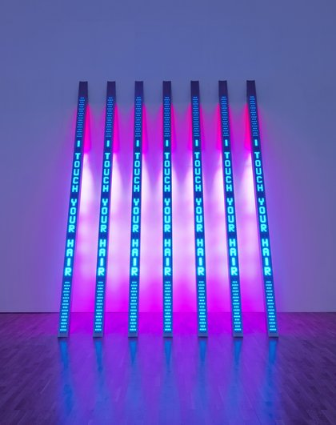

- Jenny Holzer
- Robin F. Williams
- Barbara Kruger
Jenny Holzer란 누구인가?
Jenny Holzer (born July 29, 1950 is an American neo-conceptual artist, based in Hoosick Falls, New York. The main focus of her work is the delivery of words and ideas in public spaces.
Holzer belongs to the feminist branch of a generation of artists that emerged around 1980, looking for new ways to make narrative or commentary an implicit part of visual objects. Her contemporaries include Barbara Kruger, Cindy Sherman, Sarah Charlesworth, and Louise Lawler.
The public dimension is integral to Holzer's work. Her large-scale installations have included advertising billboards, projections on buildings and other architectural structures, and illuminated electronic displays. LED signs have become her most visible medium, although her diverse practice incorporates a wide array of media including street posters, painted signs, stone benches, paintings, photographs, sound, video, projections, the Internet, T-shirts for Willi Smith, and a race car for BMW. Text-based light projections have been central to Holzer's practice since 1996. As of 2010, her LED signs have become more sculptural. Holzer is no longer the author of her texts, and in the ensuing years, she returned to her roots by painting.

In a dream
you saw
a way to survive
and you were
full of
joy